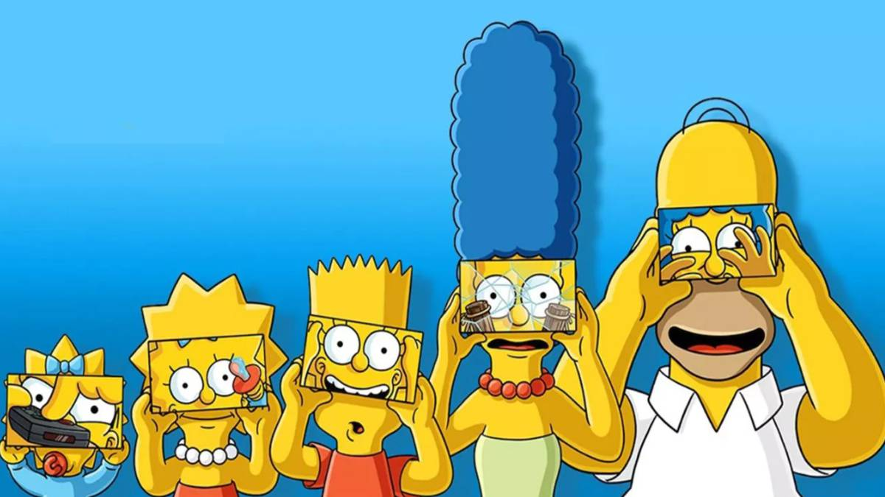

'Los Simpson': mira el tráiler más corto del verano

xdxdxd
SINOPSIS
Películas para niños a partir de 10 años
La familia amarilla más famosa del planeta da el salto a la gran pantalla. Green Day es el grupo encargado de tararear la sintonía principal de la serie antes de que
su plataforma se deshaga por los residuos del lago de Springfield. La ciudad se encuentra en el límite de la catástrofe medioambiental y Homer será el culpable de
pasar esa raya por verter un contenedor con los excrementos de su nuevo amigo, Spider Cerdo.
La noticia llega a oídos de Arnold Schwarzenegger, el presidente de los Estados Unidos de Matt Groening, que decidirá aislar a la ciudad dentro de una cúpula de cristal.
Los vecinos no aguantan este encierro y deciden ir a por el culpable. La familia Simpson deberá huir de la ciudad para no ser apaleados y Maggie será el secreto para encontrar la salida.
Homer debe resolver el problema causado y buscará ayuda en su subconsciente. Marge seguirá siendo esa madre sufridora que se deja llevar por las locuras de su marido.
Lisa encontrará el amor mientras Maggie juega con su chupete y Bart patina desnudo por las calles. Cualquier excusa es buena para vivir una nueva aventura con Los Simpson.